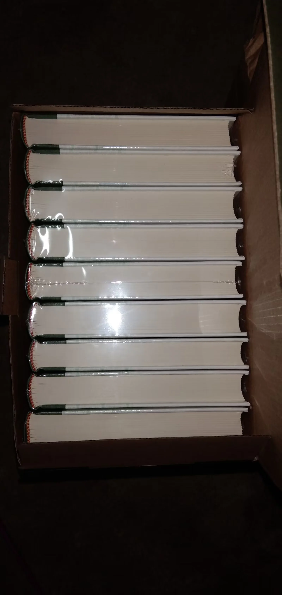
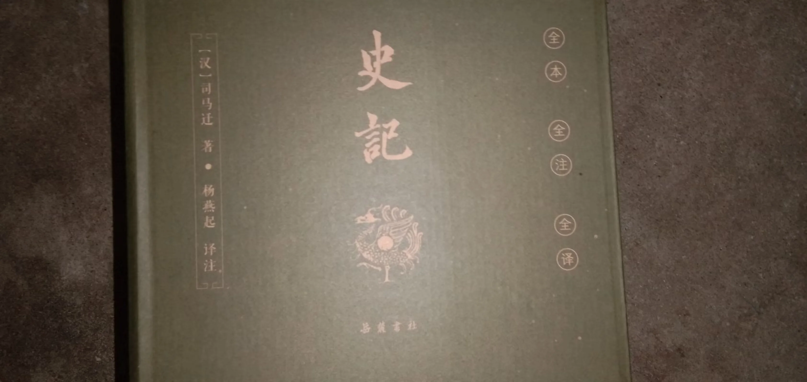
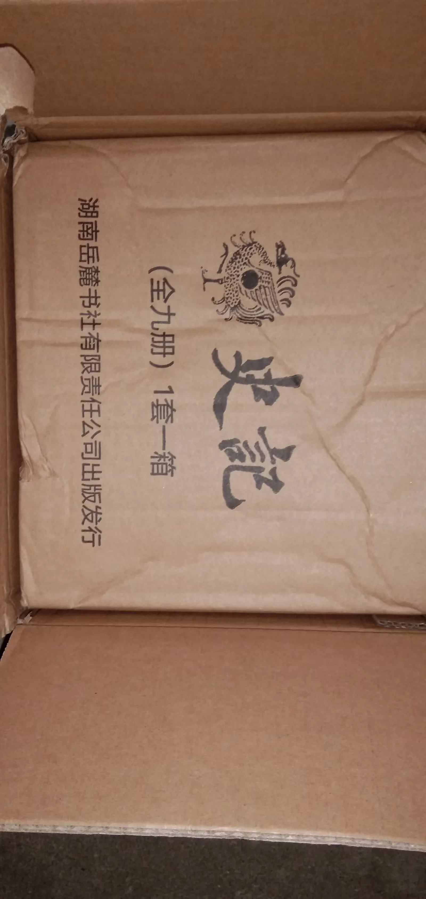
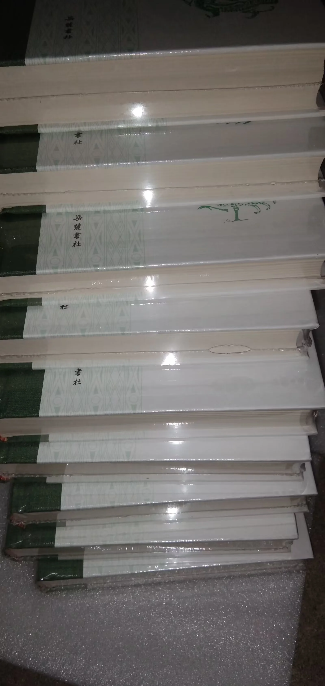

Journal · 2022-06-23
江西省九江市
米苏埃的一位朋友和我产生了隔阂。具体的原因我到现在也没完全想明白，也许是一句无心的话，也许是一个被误解的表情。人和人之间的关系就是这样脆弱，像梅雨季节的窗纸，看着好好的，一碰就破。
我再也不敢和他开玩笑了。以前觉得幽默是拉近距离最好的方式，现在才明白，玩笑是一把双刃剑，你永远不知道哪一句会刺到对方心里最敏感的地方。
今天剩下的时间，我将一个人静静地看《太史公书》。司马迁的文字有一种奇特的治愈力——他不是在安慰你，他只是诚实地告诉你，两千年来的委屈、背叛、孤独，从来就没有断过。你不是第一个感到隔阂的人，也不会是最后一个。
这样想着，心里居然好受了一些。




傍晚的时候，窗外的蝉鸣突然停了一瞬，然后又响起来。夏天的声音就是这样，你以为它要结束了，它偏偏更响了。
A friend of Misue and I have grown distant. I still can't quite pinpoint why. Perhaps a careless word, perhaps a misunderstood expression. Relationships between people are fragile like that—like window paper in the rainy season, looking intact until the slightest touch tears it open.
I no longer dare to joke with him. I used to think humor was the best way to close the distance between people. Now I understand that jokes are a double-edged sword—you never know which one will strike the most sensitive place in someone's heart.
For the rest of the day, I will quietly read the Records of the Grand Historian. Sima Qian's writing has a strange healing power. He doesn't comfort you; he simply tells you honestly that grievances, betrayals, and loneliness have never stopped for two thousand years. You are not the first to feel estranged, and you won't be the last.
Thinking this way, my heart actually felt a little lighter.
In the evening, the cicadas outside the window paused for a moment, then resumed, louder than before. That's how summer sounds are—just when you think they're fading, they come back stronger.
Un ami de Misue et moi avons pris nos distances. Je ne comprends toujours pas vraiment pourquoi. Peut-être une parole imprudente, peut-être une expression mal comprise. Les relations entre les gens sont ainsi fragiles, comme du papier de fenêtre en saison des pluies : intact en apparence, il se déchire au moindre contact.
Je n'ose plus plaisanter avec lui. Autrefois, je croyais que l'humour était le meilleur moyen de rapprocher les gens. Maintenant je comprends que les plaisanteries sont une épée à double tranchant—on ne sait jamais laquelle touchera l'endroit le plus sensible chez l'autre.
Pour le reste de la journée, je lirai tranquillement les Mémoires du Grand Historien. L'écriture de Sima Qian possède un étrange pouvoir guérisseur. Il ne te console pas ; il te dit simplement, avec honnêteté, que les griefs, les trahisons et la solitude n'ont jamais cessé depuis deux mille ans. Tu n'es pas le premier à sentir la distance s'installer, et tu ne seras pas le dernier.
En pensant ainsi, mon cœur s'est un peu allégé.
Le soir, les cigales dehors se sont tues un instant, puis ont repris de plus belle. C'est ainsi que sonne l'été : au moment où l'on croit qu'il s'éteint, il revient plus fort.
Ein Freund von Misue und ich sind uns fremd geworden. Ich verstehe immer noch nicht ganz, warum. Vielleicht ein unbedachtes Wort, vielleicht ein missverstandener Gesichtsausdruck. So zerbrechlich sind die Beziehungen zwischen Menschen—wie Fensterpapier in der Regenzeit, das unversehrt aussieht und bei der leisesten Berührung reißt.
Ich wage es nicht mehr, mit ihm zu scherzen. Früher dachte ich, Humor sei der beste Weg, Menschen näher zu bringen. Jetzt verstehe ich, dass Witze ein zweischneidiges Schwert sind—man weiß nie, welcher die empfindlichste Stelle im Herzen des anderen trifft.
Den Rest des Tages werde ich still die Aufzeichnungen des Großen Historikers lesen. Sima Qians Schreiben hat eine seltsam heilende Kraft. Er tröstet dich nicht; er sagt dir nur ehrlich, dass Kränkungen, Verrat und Einsamkeit seit zweitausend Jahren nie aufgehört haben. Du bist nicht der Erste, der sich entfremdet fühlt, und du wirst nicht der Letzte sein.
Bei diesem Gedanken wurde mir tatsächlich etwas leichter ums Herz.
Am Abend verstummten die Zikaden vor dem Fenster für einen Moment, nur um dann lauter als zuvor wieder einzusetzen. So klingt der Sommer: gerade wenn man denkt, er verklinge, kommt er stärker zurück.
日记随笔源文本
米苏埃的一位朋友和我产生了隔阂，我再也不敢和他开玩笑了……我将一个人静静地看《太史公书》。